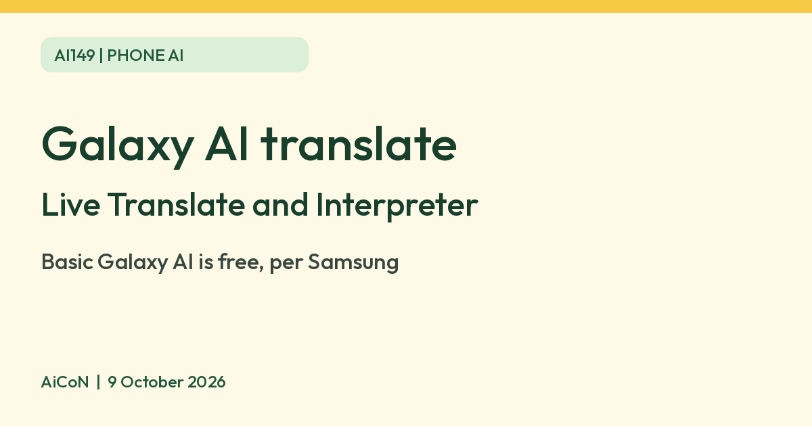

Galaxy AI Live Translate and Interpreter: free on supported Samsung phones
Samsung India says Galaxy AI basic features are free. Live Translate and Interpreter translate calls and face-to-face chats on supported Galaxy phones. Malayalam is not on Samsung India's July 2026 list for these translation features.

What it is
Live Translate and Interpreter are Galaxy AI features on Samsung phones. Samsung India says Live Translate gives real-time two-way voice and text translation, including during calls. Interpreter translates an in-person conversation on a split screen, for example when you order food or ask for directions. A Samsung India page on privacy says these features keep your inputs on the phone.
Is it free
Yes, for the basic features. Samsung's India pages say "Galaxy AI basic features provided by Samsung are free". The same note says future releases may include enhanced features or new services on a paid basis, and that different terms may apply to features from third parties. You need a Galaxy phone that supports the features. The phone itself is not free.
How to try it
- Check that your Galaxy phone is on the supported list. We did not verify which models support which feature.
- Sign in with a Samsung Account. Samsung says both Live Translate and Interpreter require one.
- Download any language packs the feature asks for, then start Live Translate in a call. For Interpreter, open Quick settings > Interpreter, choose your language and the other speaker's language, and tap the microphone to speak. Allow microphone access only when you intend to use it.
Limits to know
- Samsung India's Galaxy AI page lists 22 languages for Call Assist/Live Translate and Interpreter as of July 2026, including English, Hindi and Gujarati. The October 2025 release says Gujarati and Filipino language-pack rollout began on 29 October 2025. Malayalam, Tamil and Telugu are not on the current list for these features.
- Samsung says some features need an internet connection, some languages need a language pack, and results are not guaranteed to be accurate.
- Samsung says Live Translate works only in the pre-installed Samsung Phone app and some third-party apps.
- Samsung says availability can vary by country, region and carrier.
- We did not test the features ourselves.
Frequently asked questions
Do I need a new phone?
You need a Galaxy phone that supports Galaxy AI. We did not verify the full list of models.
Sources: Samsung Newsroom India, Galaxy AI 22 languages, Samsung Newsroom India, Galaxy AI privacy, Samsung India, One UI, Samsung India, current Galaxy AI language list, Samsung India, Interpreter setup. Checked 9 October 2026.